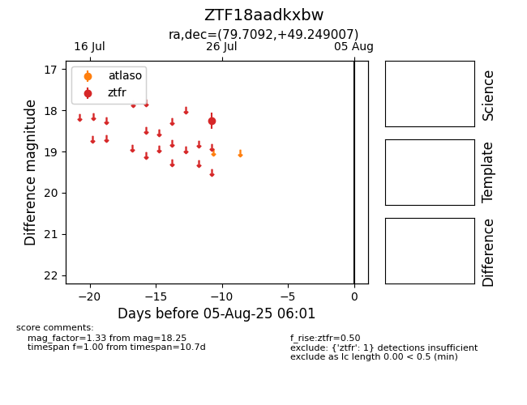

Target ZTF18aadkxbw at 2025-08-05 06:01, see:
FINK: fink-portal.org/ZTF18aadkxbw
Lasair: lasair-ztf.lsst.ac.uk/objects/ZTF18aadkxbw
ALeRCE: alerce.online/object/ZTF18aadkxbw
alt names
ZTF18aadkxbw (ztf,fink)
coordinates:
equatorial (ra, dec) = (79.7092,+49.24901)
galactic (l, b) = (160.1149,+6.72078)
photometry
last ztfr=18.25
1 ztfr detections
